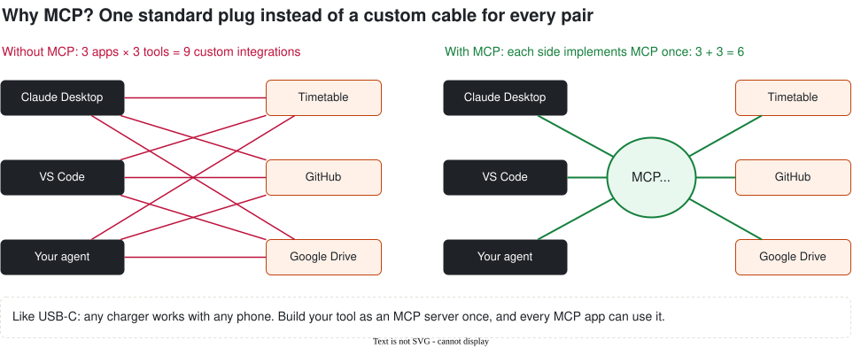
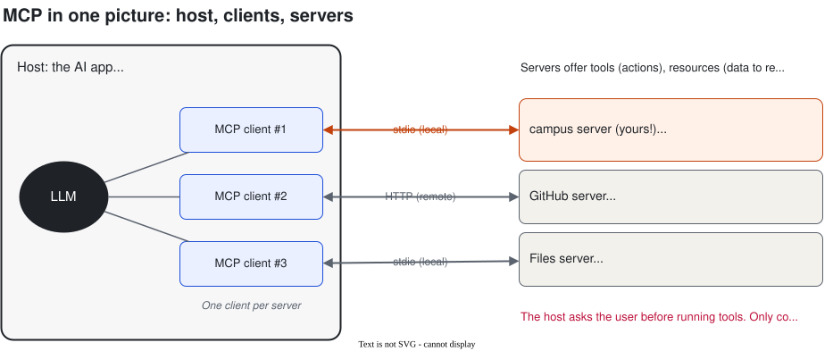

Tool Calling and MCP
In Session 6 you played the agent on paper. Now we build it for real: give Gemini tools, write the agent loop in Python, call a live weather API, and then package the same tools as an MCP server that any AI app can use.
- Function calling, step by step
- Writing a tool the model can use
- One round by hand
- The agent loop in Python
- The shortcut: automatic function calling
- Calling a real API
- Why MCP?
- How MCP works
- Build your own MCP server
- Use it from your agent and from real apps
- Staying safe with tools and MCP
- Lab: timetable agent + MCP server
- Recap, quiz and glossary
1. Function calling, step by step
Function calling (also called tool calling) is the API feature that makes agents possible. You tell the model which functions exist; when it needs one, it replies with a structured request instead of text.

- You send the question plus descriptions of your tools.
- The model replies with a function call: a name and arguments, like
get_exam_date(subject="OS"). - Your code runs the real function.
- You send the result back to the model.
- The model writes the answer, or asks for another function (back to step 3). That repeat is the agent loop from Session 6.
2. Writing a tool the model can use
A tool is a normal Python function. Here are four for CampusBuddy: three use fake college data (the same as the Session 6 tool cards), and one calls a real weather API.
EXAMS = {
"DBMS": {"subject": "DBMS", "date": "2026-12-12", "day": "Saturday", "time": "10 AM", "hall": "Hall B"},
"OS": {"subject": "OS", "date": "2026-12-14", "day": "Monday", "time": "2 PM", "hall": "Hall A"},
"CN": {"subject": "CN", "date": "2026-12-16", "day": "Wednesday", "time": "10 AM", "hall": "Hall C"},
}
def get_exam_date(subject: str) -> dict:
"""Get the date, day, time and hall of a student's semester exam. subject: DBMS, OS or CN."""
exam = EXAMS.get(subject.strip().upper())
if exam is None:
return {"error": f"No exam found for '{subject}'. Known subjects: DBMS, OS, CN."}
return exam
# Also: get_library_hours(date), book_study_room(date, start, hours), get_weather(city)
# Full code in the lab notebook.The model never sees your code. It only sees a declaration: name, description and parameters in JSON Schema.
{
"name": "get_exam_date",
"description": "Get the date, day, time and hall of a student's semester exam.",
"parameters": {
"type": "object",
"properties": {"subject": {"type": "string", "description": "Subject code: DBMS, OS or CN"}},
"required": ["subject"],
},
}- Clear name and description: say what it does and when to use it ("Only call this when the student asks for a booking").
- Describe every parameter, including the format ("YYYY-MM-DD", "1 to 3").
- Return structured data (a dict), not a long sentence.
- Return errors, don't crash.
{"error": "No exam found for 'Maths'..."}lets the model explain or fix its mistake. - Small and focused: one tool, one job. Separate read-only tools from tools that change things.
- Validate inputs in your code. The model may send
2.0instead of2, or a badly formatted date.
3. One round by hand
config = types.GenerateContentConfig(
system_instruction=SYSTEM,
tools=[types.Tool(function_declarations=declarations)],
temperature=0,
)
question = "When is my OS exam?"
resp = client.models.generate_content(model=MODEL, contents=question, config=config)
call = resp.function_calls[0]
print(call.name, dict(call.args)) # get_exam_date {'subject': 'OS'}
result = TOOLS[call.name](**call.args) # WE run the tool
contents = [
types.Content(role="user", parts=[types.Part(text=question)]),
resp.candidates[0].content, # the model's tool request
types.Content(role="user", parts=[
types.Part.from_function_response(name=call.name, response={"result": result}),
]),
]
final = client.models.generate_content(model=MODEL, contents=contents, config=config)
print(final.text) # "Your OS exam is on Monday 14 Dec at 2 PM in Hall A."Notice that we keep the whole conversation in contents: the question, the model's tool request, and our tool result. It's the same "re-send the history" idea as Session 3.
4. The agent loop in Python
Put that in a loop, cap it, and ask a human before risky actions (Session 5). This is the real version of the Session 6 pseudo-code:
NEEDS_APPROVAL = {"book_study_room"}
def run_agent(goal, max_steps=6, ask_human=True):
contents = [types.Content(role="user", parts=[types.Part(text=goal)])]
for step in range(1, max_steps + 1): # always cap the loop
resp = client.models.generate_content(model=MODEL, contents=contents, config=config)
if not resp.function_calls: # no tool needed: done
return resp.text
contents.append(resp.candidates[0].content)
parts = []
for call in resp.function_calls: # may be several at once!
args = dict(call.args or {})
print(f"🛠️ step {step}: {call.name}({args})")
if call.name in NEEDS_APPROVAL and ask_human and input("Approve? (y/n) ") != "y":
result = {"status": "cancelled", "reason": "The student did not approve this action."}
else:
result = TOOLS[call.name](**args)
print(f"👀 {result}")
parts.append(types.Part.from_function_response(name=call.name, response={"result": result}))
contents.append(types.Content(role="user", parts=parts))
return "Sorry, I couldn't finish that. Please contact the office."🛠️ step 1: get_exam_date({'subject': 'OS'})
👀 {'subject': 'OS', 'date': '2026-12-14', 'day': 'Monday', 'time': '2 PM', 'hall': 'Hall A'}
🛠️ step 2: get_library_hours({'date': '2026-12-13'})
👀 {'date': '2026-12-13', 'day': 'Sunday', 'open': '10:00', 'close': '16:00', ...}
🛠️ step 3: book_study_room({'date': '2026-12-13', 'start': '10:00', 'hours': 2})
Approve? (y/n) y
👀 {'status': 'confirmed', 'room': 'S1', ...}Parallel calls: for "How many days between my first and last exam?", the model often asks for get_exam_date("DBMS") and get_exam_date("CN") in the same step. That's why the loop handles a list of calls.
5. The shortcut: automatic function calling
The Gemini SDK can run the whole loop for you. Pass the Python functions themselves; it reads their docstrings and type hints:
auto_config = types.GenerateContentConfig(
system_instruction=SYSTEM,
tools=[get_exam_date, get_library_hours, get_weather], # plain Python functions
)
resp = client.models.generate_content(
model=MODEL, contents="Is the library open on the day before my CN exam?", config=auto_config)
print(resp.text)Great for quick scripts. But you lose control: there's no place for an approval step or logging of each call. Frameworks (Session 8) give you this convenience with the control.
6. Calling a real API
Tools can call anything: databases, college ERPs, public APIs. get_weather uses Open-Meteo, which is free and needs no API key:
def get_weather(city: str) -> dict:
"""Get the current temperature and today's and tomorrow's rain chance for a city."""
geo = requests.get("https://geocoding-api.open-meteo.com/v1/search",
params={"name": city, "count": 1}, timeout=10).json()
if not geo.get("results"):
return {"error": f"City '{city}' not found."}
place = geo["results"][0]
wx = requests.get("https://api.open-meteo.com/v1/forecast", params={
"latitude": place["latitude"], "longitude": place["longitude"],
"current": "temperature_2m",
"daily": "precipitation_probability_max,temperature_2m_max,temperature_2m_min",
"timezone": "auto", "forecast_days": 2}, timeout=10).json()
... # pick out today's and tomorrow's numbers (full code in the lab)Now "Will it rain in Mysuru tomorrow? Should I carry an umbrella?" gets a real answer from live data. The model decides to call the tool, reads the rain chance and gives advice.
7. Why MCP?
Our tools work in our notebook. But what if you also want them in Claude Desktop, in VS Code, and in your friend's agent? Without a standard, every app needs its own custom integration for every tool.

The Model Context Protocol (MCP) is an open standard for connecting AI apps to tools and data. Anthropic introduced it in late 2024; since then OpenAI, Google, Microsoft and many others have adopted it, and there are thousands of ready-made MCP servers (GitHub, Google Drive, Slack, databases, browsers...).
8. How MCP works

| Part | What it is | Example |
|---|---|---|
| Host | The AI app the user talks to | Claude Desktop, VS Code, Cursor, your own agent |
| Client | Lives inside the host; one connection per server | The ClientSession in our lab |
| Server | A small program that offers capabilities | Our campus_server.py |
| Transport | How they talk | stdio (a local process) or HTTP (a remote server) |
A server can offer three kinds of things:
- Tools: actions the model can call (
get_exam_date,book_study_room). Most servers are mainly this. - Resources: data the app can read (a file, a syllabus, a database row).
- Prompts: ready-made prompt templates ("Summarise this complaint").
9. Build your own MCP server
With the official Python SDK (pip install mcp), it's a few lines. We reuse the exact same functions:
# campus_server.py
from mcp.server.mcpserver import MCPServer
from campus_tools import get_exam_date, get_library_hours, book_study_room, get_weather
mcp = MCPServer("campus")
for fn in (get_exam_date, get_library_hours, book_study_room, get_weather):
mcp.add_tool(fn) # name, docstring and type hints become the tool's description
if __name__ == "__main__":
mcp.run() # stdio transportfrom mcp.server.fastmcp import FastMCP and mcp = FastMCP("campus"). Same idea, new name. If you see "No module named 'mcp.server.fastmcp'", that's why.
10. Use it from your agent and from real apps
From Python (an MCP client)
from mcp import ClientSession, StdioServerParameters
from mcp.client.stdio import stdio_client
server = StdioServerParameters(command=sys.executable, args=["campus_server.py"])
async with stdio_client(server) as (read, write):
async with ClientSession(read, write) as session:
await session.initialize()
tools = await session.list_tools() # discover tools
result = await session.call_tool("get_exam_date", {"subject": "OS"})
print(result.content[0].text)In the lab, we feed the discovered tools to Gemini and send every function call through session.call_tool. The agent no longer knows or cares where the tools live.
From Claude Desktop, Claude Code, VS Code or Cursor
On your laptop, register the server once and the app can use your tools. For Claude Desktop (Settings → Developer → Edit Config):
{
"mcpServers": {
"campus": {
"command": "python",
"args": ["C:/path/to/campus_server.py"]
}
}
}For Claude Code: claude mcp add campus -- python /path/to/campus_server.py. VS Code and Cursor have similar MCP settings. Then ask "When is my OS exam?"; the app asks permission and calls your tool.
11. Staying safe with tools and MCP
Tools give the AI real power, so Session 5 matters even more here:
- Least privilege: read-only tools by default. A booking tool, not a "run any SQL" tool.
- Human approval for actions that change things or can't be undone.
- Validate arguments in the tool, not just in the prompt.
- Cap the loop and log every call.
- Only install MCP servers you trust. A local server runs code on your machine, and a malicious server can hide instructions in its tool descriptions (a form of prompt injection).
- Never put secrets in tool results or descriptions; the model (and the user) can see them.
12. Lab: timetable agent + MCP server (45 min)
Part A: function calling
- Write and test the four tools (timetable, library hours, booking, live weather).
- Describe them to Gemini.
- Do one round by hand and see the function call.
- Write the agent loop with an approval step. Run the Session 6 goal cards for real.
- Try the automatic shortcut.
Part B: MCP
- Turn the same tools into an MCP server.
- Connect to it as an MCP client: list and call tools.
- Give Gemini its tools from the MCP server.
- On your laptop: plug the server into Claude Desktop, Claude Code or VS Code.
search_faq from Session 4 as a tool. Improve an error message so the model fixes its own mistake. Serve over HTTP. Add a fake send_email_to_all_students tool and try a prompt injection: does the approval step save you?
13. Recap
- Function calling: the model replies with a tool name + arguments; your code runs it and sends the result back.
- The model only sees the declaration: name, description, parameters. Write them carefully.
- Tools should return structured data and errors instead of crashing.
- The agent loop = function calling in a capped loop, with approval for risky actions.
- MCP is the USB-C of AI tools: build a server once, use it from any MCP app.
- Host → client → server; servers offer tools, resources and prompts over stdio or HTTP.
- Only connect servers you trust; least privilege and human approval still apply.
Quick quiz
1. When the model wants to use a tool, what does it send back?
A function call: the tool's name and the arguments (for exampleget_exam_date(subject="OS")), not text and not the result.2. Why should a tool return {"error": ...} instead of raising an exception?
So the model sees what went wrong and can explain it to the user or try again with better arguments, instead of the program crashing.3. What's the downside of automatic function calling?
Less control: no easy place for approval steps, custom logging or extra checks between calls.4. What problem does MCP solve?
Without a standard, every app needs a custom integration for every tool (apps × tools). With MCP, each app and each tool implements the protocol once.5. Name the three MCP roles.
Host (the AI app), client (one connection per server, inside the host), server (offers tools, resources, prompts).6. What's the difference between the stdio and HTTP transports?
stdio runs the server as a local process on your machine; HTTP connects to a server running somewhere else.7. A random MCP server from the internet promises "free unlimited AI tools". Any risk?
Yes. A local server runs code on your machine and its tool descriptions can contain hidden instructions. Only install servers from sources you trust, and review what they can do.Glossary
| Term | Meaning in one line |
|---|---|
| Function / tool calling | The model asks your code to run a named function with arguments. |
| Function declaration | The name, description and parameter schema the model sees for a tool. |
| JSON Schema | A standard way to describe the shape of JSON data (types, required fields). |
| Function response | The tool's result, sent back to the model. |
| Parallel function calls | Several tool calls requested in one step. |
| Automatic function calling | The SDK runs the tool loop for you. |
| MCP | Model Context Protocol: an open standard connecting AI apps to tools and data. |
| MCP host / client / server | The AI app / its connection to a server / the program offering tools. |
| Resource (MCP) | Data a server exposes for reading. |
| Transport | How client and server talk: stdio (local) or HTTP (remote). |
Learn more (free)
- Google, Function calling with the Gemini API (ai.google.dev)
- Model Context Protocol, official site and docs (modelcontextprotocol.io)
- MCP Python SDK on GitHub (modelcontextprotocol/python-sdk), including the v1 → v2 migration guide
- Open-Meteo API docs (open-meteo.com), a good free API to practise with
Instructor guide
Suggested plan for the 90 minutes. Press S in the slides to open speaker notes.
| Time | Segment | What to do |
|---|---|---|
| 0–5 min | Hook | "Yesterday you were the Tools person. Today Python is." Show the Session 6 pseudo-code. |
| 5–15 min | Function calling | Sequence diagram. Stress step 2: the model returns a request, not an answer. |
| 15–25 min | Tools + declarations | Walk through get_exam_date and its declaration. Tips box. |
| 25–40 min | Live: one round + the loop | Run lab Steps 3–4 on the projector. Read the 🛠️/👀 lines aloud as Think/Act/Observe. |
| 40–50 min | MCP | Why-MCP diagram, USB-C analogy, host/client/server. Show the 10-line server. |
| 50–85 min | Lab | Parts A and B. Fast students: plug the server into Claude Desktop or VS Code on their laptop. |
| 85–90 min | Recap + quiz | Quiz 1, 4 and 7. Preview Session 8: frameworks and teams of agents. |
MODEL name and the mcp package version (the lab is written for v2). Function calling makes several requests per question, so free-tier rate limits hit sooner: stagger the class or keep a backup key.